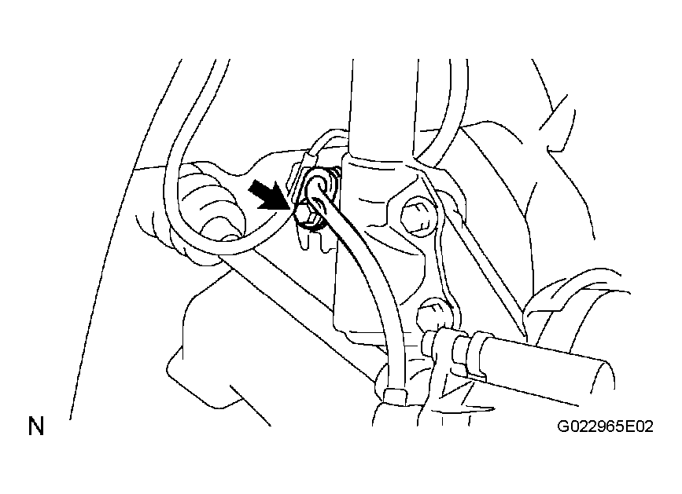
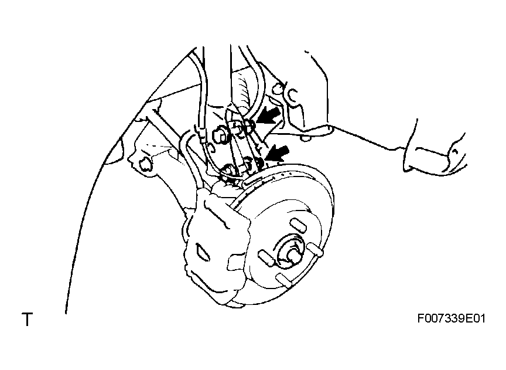
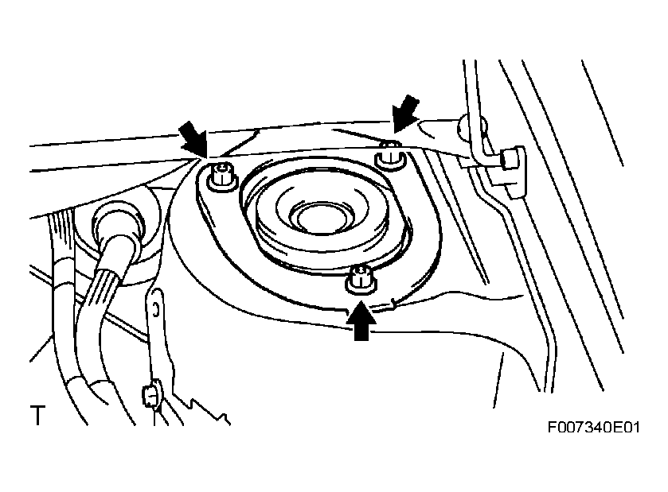

Front Shock Absorber With Coil Spring: Removal
- REMOVE WINDSHIELD WIPER ARM COVER
- REMOVE FRONT WIPER ARM LH
- REMOVE FRONT WIPER ARM RH
- REMOVE HOOD TO COWL TOP SEAL
- REMOVE COWL TOP VENTILATOR LOUVER LH
- REMOVE COWL TOP VENTILATOR LOUVER RH
- REMOVE WINDSHIELD WIPER LINK ASSEMBLY
- REMOVE COWL TOP PANEL OUTER
- Disconnect the hose and wire harness form the wiper.
- Remove the cowl top panel outer with the 8 bolts.
- REMOVE FRONT WHEEL
- DISCONNECT FLEXIBLE HOSE
- Remove the bolt and disconnect the flexible hose and speed sensor wire clamp from the shock absorber bracket.

Courtesy of © TOYOTA, LICENSE AGREEMENT TMS1002
- REMOVE FRONT SHOCK ABSORBER WITH COIL SPRING
- Remove the 2 nuts and 2 bolts, and disconnect the shock absorber from the steering knuckle.

Courtesy of © TOYOTA, LICENSE AGREEMENT TMS1002
- Remove the 3 nuts and shock absorber.
- Remove the No. 2 suspension support.

Courtesy of © TOYOTA, LICENSE AGREEMENT TMS1002